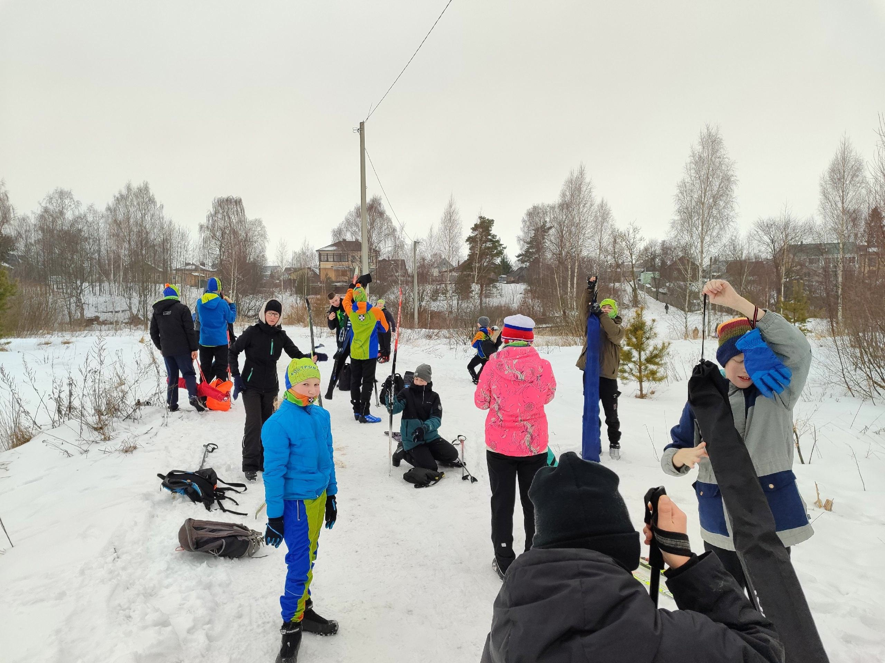
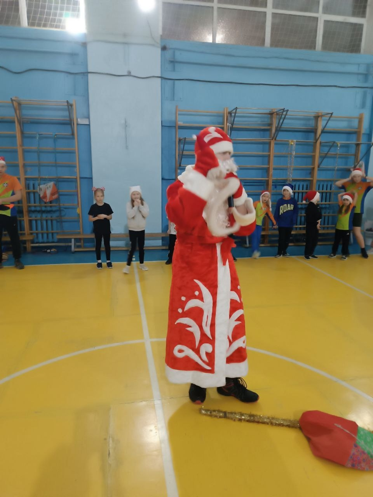
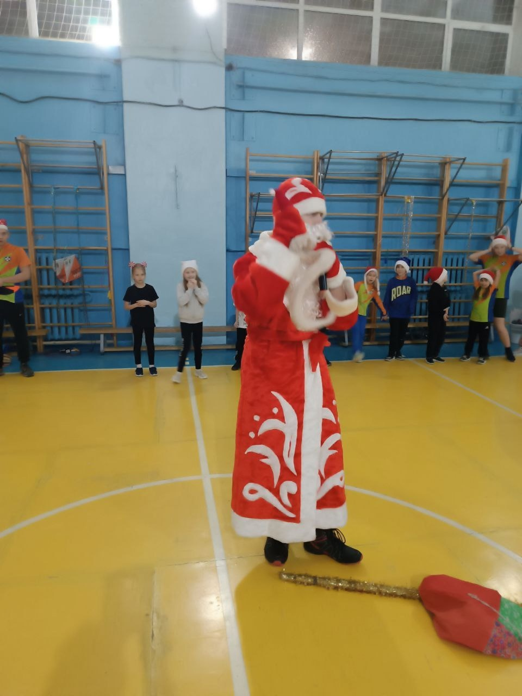
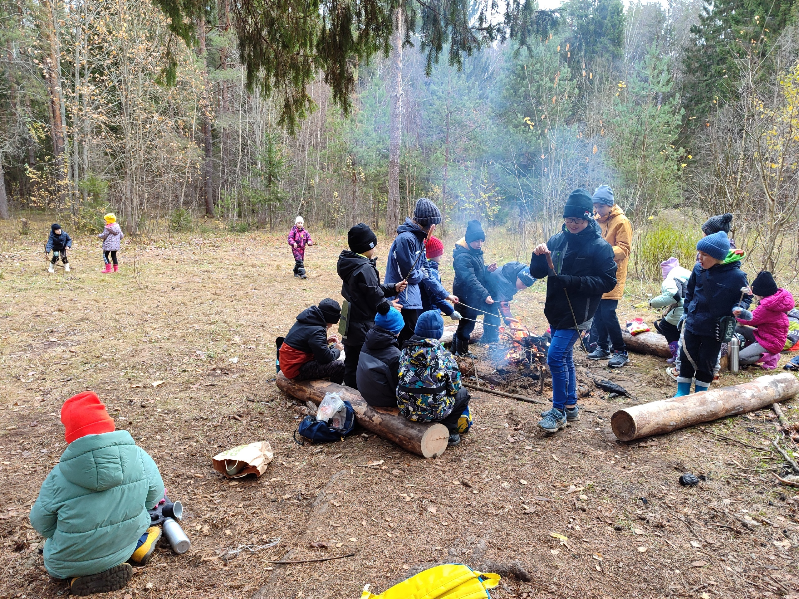
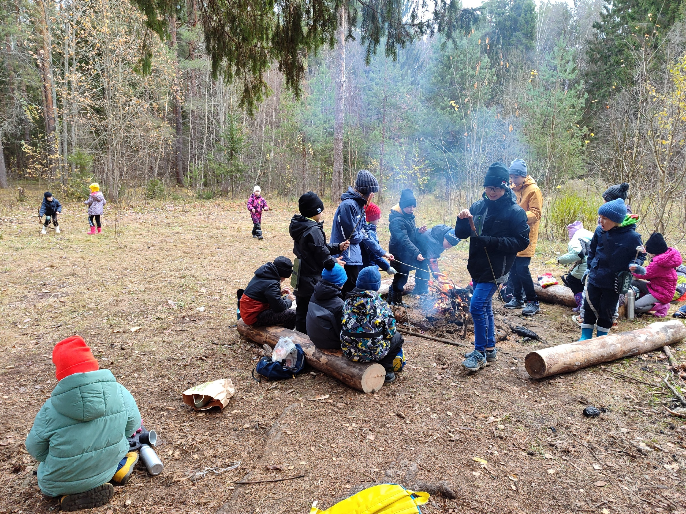

Спортивное ориентирование
Бег, карта и компас...
13 апреля 2025
Сегодня в Вербное воскресенье мы немножко подышали свежим воздухом и потренировались в парке Победы.
Дистанции было 3 уровня сложности. Каждый мог попробовать пройти более трудную или отточить навык работы с
компасом на более легкой. Итоги подведены.
Результаты
9 апреля 2025
ВНИМАНИЕ! КТО ХОЧЕТ ПОТРЕНИРОВАТЬСЯ - РЕГИСТРИРУЙСЯ!
Открытая тренировка в воскресенье 13 в 10:00. Внимательно смотрите на карту, когда регистрируетесь, там
точно указано место старта
Регистрация
31 марта 2025
ВНИМАНИЕ!!! Открыта регистрация на Региональные соревнования по спортивному ориентированию, которые пройдут
27 апреля в Парке Пебеды. Вся информация будет опубликована на сайте Федерации
Регистрация
30 марта
Живи в движении! - Со спортом по жизни! Наш лозунг.
Вот и пролетели 4 дня Всероссийских соревнований "Чёрное море - 2025". Сегодня, на четвёртый день была гонка
с гандикапом. Ребята старались три дня, чтоб их результат был выше и они смогли стартовать ближе к лидерам.
В это раз получилось у Семёнова Игоря. Он стартовал с опозданием в 19 минут и Смирнова Анастасия. Она
стартовала с опозданием в 5 минут. Трасса была очень интересна, а финиш был сногшибателен, в прямом смысле
этого слова. Финиш был поставлен так, что мы последним три КП всё поднимались и поднимались в гору.
Но каждый старался, проверял себя, свои силы. Конкуренция очень большая. В итоге наши результаты:
Ж12 Изотова Елизавета - 68
Ж16 Смирнова Анастасия - 16
Ж18 Шапошникова Дарья - 48
М14 Семёнов Игорь - 84
М16
Кудашев Сергей - 50
Баринов Егор - 134
Набатов Семён - 146
Смирнов Владимир - 121
Open1 Мохов Матвей - 30
Open2
Кабанов Егор - 50
Изотова Наталия - 27
Все большие молодцы!!! Беговой сезон открыт!
29 марта
Сегодня пожалуй самый динамичный старт -спринт. Но сложность
в том, что температура воздуха 21, склон весь изрыт промоинами и много колючих кустов, а сам склон
каменистый. Масштаб карты так велик, что ты просто прибегаешь КП, думая что это твой 2, а на самом деле уже
добежал до 3КП. Сегодня дистанция требовала от ребят большой концентрации внимания, чёткого чтения карты и
скоростной выносливости.
Результаты 3 дня: "Аэропорт"
Ж12 Изотова Елизавета - 81
Ж16 Смирнова Анастасия - 22
Ж18 Шапошникова Дарья - 49
М14 Семёнов Игорь - 24
М16
Кудашев Сергей - 87
Баринов Егор - 152
Набатов Семён - 162
Смирнов Владимир - 94
Open1 Мохов Матвей - 10
Open2
Кабанов Егор - 75
Изотова Наталия - 20
28 марта
Сегодня прошел второй день соревнований. Пожалуй самый
трудный. Ведь сегодня был лонг.
Температура воздуха становиться всё теплее и теплее, бежать всё труднее и труднее. Много лощин, подъёмов,
спусков и очень колючие лианы.
Результаты 1 дня: "Михайловский перевал"
Ж12 Изотова Елизавета - 65 из 148
Ж16 Смирнова Анастасия - 14 из 161
Ж18 Шапошникова Дарья - 58 из 87
М14 Семёнов Игорь - 112 из 278
М16
Кудашев Сергей - 117 из 213
Баринов Егор - 151
Набатов Семён - 171
Смирнов Владимир - неправильная отметка
Open1 Мохов Матвей - 4 из 107
Open2
Кабанов Егор - неправильная отметка
Изотова Наталия - 29 из 128
Результаты 2 дня: Пшада, гора Рамзинская
Ж12 Изотова Елизавета - 118
Ж16 Смирнова Анастасия - 17
Ж18 Шапошникова Дарья - 47
М14 Семёнов Игорь -
М16
Кудашев Сергей - 84
Баринов Егор - 132
Набатов Семён - 154
Смирнов Владимир - неправильная отметка
Open1 Мохов Матвей - 23
Open2
Кабанов Егор - неправильная отметка
Изотова Наталия - 30
27 марта
Первый день Всероссийских соревнований "Чёрное море 2025".
Погода просто прекрасная, но очень жарко бежать. Главное, что мы сегодня все финишировали. Результат чуть
позже.
25 марта
Ура! К А Н И К У Л Ы!! А где весенние каникулы проводят
ориентировщики? Конечно на соревнованиях в Геленджике.
Наше путешествие началось с Москвы, там мы посетили Центральный музей Великой Отечественной войны и музей
под открытым небом Г. О. Р. А..
Буквально 31 час и мы в Геленджике. Отличная погода и мы сразу пошли гулять на канатную дорогу. Впереди нас
ждут старты.
16 марта 2025
Сегодня - 16 марта, провели еще один тренировочный старт. Овраг - спринт. Два круга для более опытных. Для
младших маркировка, но надо было поориентироваться.
Результаты
11 марта 2025
Всех приглашаем на открытую тренировку 16 марта в воскресенье рядом с Ж/д мостом.
Успей зарегистрироваться.
Регистрация
8 марта 2025
Сегодня, в Международный женский день, мы собрались в Парке победы. Решили , что праздник надо провести на
свежем воздухе. А на улице действительно ВЕСНА. Солнышко, птички поют, белочки прыгают с дерева на дерево, и
мы с картами и компасом по лесу бегаем. Сегодня было 4 вида сложности дистанции, каждый выбрал свою.
Протокол результатов смотри ниже.
Результаты
4 марта 2025
Срочно!!! 8 марта проводим тренировочные соревнования по спортивному ориентированию, посвященные 8 МАРТА.
Встречаемся в Парке Победы со стороны Профилактория. Старт по мере готовности. 3 вида сложности дистанции.
Для самых маленьких - маркированный маршрут. Стартовый взнос 150 руб. Успей зарегистрироваться
Регистрация
8 февраля 2025
Сегодня, в настоящий морозный и солнечный день, мы поучаствовали в "Лыжне России". Наконец то покатались
коньком. Как же нам не хватает снега в этом году. Ребята всё молодцы.
7 февраля 2025
Результаты Чемпионата и Первенства Костромской области по спортивному ориентированию на
маркированной трассе.
Результаты
2 февраля 2025
2 февраля 2025 года прошел Чемпионат и Первенство Костромской области по спортивному ориентированию на
маркированной трассе. Погода сегодня нас порадовала, было тепло и тихо. Нам повезло - нашли снег в лесу и
поэтому действительно провели соревнования лыжная гонка - маркированная трасса. Участникам самим пришлось
отмечать нахождение КП с помощью проколов. Было три вида маркировки: желтая, красная и зеленая. Пока
выкладываем контрольные карты.
28 января 2025
В прошедшие выходные в поселке Караваево состоялась открытая тренировка по спортивному ориентированию на
лыжах по маркированной трасcе. Ребята на память запоминали карту, передвигались за тренером и отмечали в
карте КП. Тренировка удалась на славу!


20 января 2025
Внимание! Успей зарегистрироваться. 2 февраля Чемпионат и Первенство Костромской области на маркированной
трассе.
Регистрация
29 декабря 2024
28 и 29 декабря 2024 года в Москве прошли Всероссийские спортивные соревнования по спортивному
ориентированию «НОВОГОДНИЕ СТАРТЫ».
В программу соревнований вошли две лыжные гонки: спринт и классика.
«Прекрасное завершение спортивного 2024 года в Москве на Всероссийских соревнованиях." Ребята старались, но
конкуренция была очень большая.
М12
Мохов Максим в первый день не уложился в КВ, зато второй день 62 место
Нечаев Максим в первый раз не уложился в КВ, а второй раз потеря чипа не дала возможность узнать свои силы.
М13
Семёнов Игорь 35 и 31 места
М14
Набатов Семён 55 и 53 места
Кабанов Егор увы снят и 43 место
М15
Смирнов Владимир 22 и 17 места
Торопынин Тимофей 21 место и как жаль, что вышла поломка лыжи во второй день
Кудашев Сергей 13 и 12 места
Баринов Егор 15 и 14 места
М17
Жучков Иван 58 и во второй день один КП не пикнул
Ж14
Смирнова Анастасия 22 и 26 места
Ж17
Шапошникова Дарья 30 и 29 места
О4
Изотова Елизавета в первый день растерялась, потерялась, но вернулась, поэтому плохая отметка, второй день
78 место из 128 человек.
Итог: ещё больше надо тренироваться выезжать, и если зимние соревнования брать запасные столики.
А так замечательно, в канун Нового года посоревновались, а затем попробовали свои силы на Московском катке
на
ВДНХ.

28 декабря 2024
Ура Мы в Москве на Всероссийских соревнованиях "Новогодние старты". Ох сложно открывать лыжный сезон, но мы
стараемся. Завтра второй день соревнований.
20 декабря 2024
11 дней осталось до Нового года, а клуб "Шахматы на бегу" уже встречает Новый год. В этом году у нас не
получается провести его в лесу, так как мы едем на Всероссийские соревнования, поэтому встретили его в
спортивном
зале. Пришлось ребятам проявить все свои силы, и командную смекалку, чтоб пройти испытания и украсить
ёлочку. Ну конечно без ДЕДА МОРОЗА не обошлось. Положительные эмоции, подарки и уже появилось Новогоднее
настроение.
16 декабря 2024
Вот и открыли ЗИМНИЙ сезон. Начинаем вкатываться классикой. Работаем так 2 недели и потом переходим на
конёк.
15 декабря 2024
Сегодня в парке Берендеевка прошел Чемпионат Костромской области по спортивному ориентированию. Ребятам
пришлось преодолевать свои дистанции по заснеженным тропам, но это ни чуть их не испугало. Зимний лес и
интересные трассы подарили незабываемые впечатления от соревнований. ИТОГОВЫЙ протокол прикреплён ниже.
Результаты
3 ноября 2024
"Шахматы на бегу" продолжают тренироваться, опять съездили в Ярославль на тренировочные старты.
У нас пополнение по группе МЖ10 и это радует. Уже такие маленькие и бегают самостоятельно. Старшим ребятам
пришлось аж 3 круга бежать - было рассеивание по системе Фарса, группа М14 бегали по бабочке. В группе М12
Мохов Матвей 5 место, в возрастной группе М16-20 Кудашев Сергей 6 место. По младшим группам пока не можем
сказать ввиду того, что будут пересматривать результаты, так как стартовая база не сработала. Ещё
порадовало,
что увидели ребят из Костромской группы "Твои ориентиры", они тоже участвовали.
3 ноября 2024
Каникулы подходят к своему завершению. "Шахматы на бегу" как начали каникулы с соревнований, так и
завершили
выездными соревнованиями.
Всю каникулярную неделю тренировались по разным картам в Караваевском лесу, в лесном массиве рядом с ЖД
мостом, проходили различные лабиринты и вот 3 ноября 2024 года поучаствовали в Тверицком бору города
Ярославля на открытых городских соревнованиях по спортивному ориентированию Иван Сусанин.
В соревнованиях приняли участие более 250 человек из Ярославля, Рыбинска, Ростова, Вологды и мы из
Костромы.
Нашим ребятам удалось даже занять призовые места.
Ж10 Изотова Елизавета 2 место
Ж14 Смирнова Анастасия 1 место
Ж16 Шапошрикова Дарья 3 место
Ж12 Костина Ульяна 2 место
РД Кузнецов Кирилл 5 место.
М14
Семёнов Игор 11 место
Алина Михаил 16 место
М12
Мохов Матвей 9 место
М16
Тренов Александр 12 место
Жучков Иван 10 место
Дымков Арсений 11 место
Торопынин Тимофей 9 место
Якобчук Роман 7 место
28 октября 2024
Сегодня в понедельник прогулялись по Караваевскому лесу. С самыми маленькими познакомились с картой и её
знаками. Сравнили как это выглядит в реальности и на карте. Более старшие вместе со мной поставили
дистанцию
и отметили её на карте, а старшие организовали для младших костёр и пробежали дистанцию.
12 июня 2024
Сегодня 12 июня, День России. Мы участвовали в полумарафоне "Здорово, Кострома!. Ребята-ориентировщики
пробежали 3км.
7 июня 2024
Сегодня решили вернуться к ориентированию и провели беговую тренировку в "Берендеевке", а потом
совершили
мини поход до водно-гребной базы на реке Кострома Гребля на байдарках и каноэ г. Кострома. Нам
понадобился
час, чтоб дойти до неё из парка. А там нас ждала тренировка на " Драконах". Руки тоже сегодня прокачали.
А
вечер завершили награждением по итогам Кубка Парков г. Костромы. Впереди нас ждёт забег на 3 км 12 июня.
6 июня 2024
Сегодня довольно плодотворный день. Решили поработать побольше с обвязками и верёвками. Классная полоса
препятствий получилась.
5 июня 2024
Сегодня в "Берендеевке" мы потренировались на славу. Ориентирование по выбору - кто правильно спланирует
дистанцию, тот и победил. Сложность заключается в том, что все стартуют одновременно. У кого беговых сил
и
выносливости хватит, да ещё и думать при этом.
После нескольких стартов решили отдохнуть - поиграть в лазертаг в пэйнтбольном клубе "Линия огня".
Отлично
провели время.
4 июня 2024
Второй день наших лагерных сборов мы провели довольно активно. С утра в "Парке Победы" отточили навыки
ориентирования. Поработали в оврагах - наводили спуски и подъёмы. Отработали параллельные перилла. А
после
обеда побывали на мастер классе по оказанию первой помощи у Пушкова Антона ДРУГАЯ СТОРОНА, который
проходил
в необычном месте - в бункере БУНКЕР С11 | Страйкбол | Лазертаг. Там мы
познакомились с алгоритмом оказания помощи, увидели множество разных жгутов и попробовали правильно
накладывать жгут.
3 июня 2024
Ура Каникулы!
А у нас началась самая жара тренировок. Сегодня занимались в парке "Победы". Преодолели несколько
дистанций.
Позанимались на турниках. Сходили к Волге, хотели с верёвками дистанцию пройти, но дождь внёс свои
коррективы в наши планы. Однако сделали скоростную в горку и сходили на родник. Впереди ещё много
интересного.
16 апреля 2024
"Шахматы на бегу" изучают не только карты и совершенствуют свои физические качества, но и познают как
правильно оказать первую помощь.
Спасибо большое Александре Куприне - инструктору по первой помощи от Костромского регионального
отделения
Российского Красного Креста. Она провела для нас мастер-класс по первой помощи.
На мастер-классе ребята ознакомились с алгоритмом оказания первой помощи, узнали как определить дыхание
у
человека без сознания и что делать при его отсутствии. Ребята попрактиковались на манекене.
19 марта 2024
"Шахматы на бегу" закрыли лыжный сезон и отправились путешествовать на юг. Впереди нас ждут 4 старта.
15 марта 2024
Сегодня отлично сходили с младшими ориентировщиками в поход. Погода просто была класс. Солнце и
волшебные
звуки леса. Побродили по тропинкам, побегали по насту, собрали дрова и разожгли костер. Конечно же мы
пожарили сосиски и хлебушек и не забыли покормить уточек. Даже устроили баталии в снежки и покатались с
горки. Мы отлично отдохнули и получили заряд энергии.
3 марта 2024
Мы снова в субботу потренировались на лыжах. Лыжня была просто супер. Лыжи сами катили.
25 февраля 2024
Сегодня потренировались на славу. Оттачивали подъем в горку, ну а более старшие работали над
выносливостью.
А затем отправились в сосновый лес, на нашу "чудо полянку". Развели костёр, пожарили сосиски. Время
быстро
пролетело.
12 июня 2023
День России "Шахматы на бегу" отпраздновали легкоатлетическим забегом на 3 км
9 июня 2023
Вот и началась жаркая пора - лето. Одни ребята усердно готовятся к Межрегиональным соревнованиям "Школа
безопасности", другие трудятся в профильном отряде.
никто не сидит дома - только активный образ жизни.
А впереди нас ждут походы, соревнования "Макушка лета" и просто интересные дни.
9 июня 2023
Вот и началась жаркая пора - лето. Одни ребята усердно готовятся к Межрегиональным соревнованиям "Школа
безопасности", другие трудятся в профильном отряде.
никто не сидит дома - только активный образ жизни.
А впереди нас ждут походы, соревнования "Макушка лета" и просто интересные дни.
25 апреля 2023
Приглашаем на юбилейный концерт!
12 апреля 2023
Сегодня "Шахматы на бегу" и "Твой выбор" совершили интересную тренировку. Мы летали на ракете, а почему?
Ведь сегодня, 12 апреля 1961 года, состоялся первый полет человека в космос. Подвиг Юрия Гагарина дал
людям
всего мира важнейшие открытия, веру в широчайшие возможности человека в освоении космического
пространства,
мощный импульс в развитии науки и техники.
И наш общий долг – беречь память о поколении первых покорителей космоса, которые, невзирая на риск, шли
в
неизведанное. Мы наследники великих людей, поздравляем всех с днём Космонавтики!
31 марта 2023
Каникулы - не повод сидеть дома! Это самая жаркая пора для "Шахмат на бегу" и "Твоего выбора".
Разнообразные
тренировки каждый день. С утра до вечера. Есть возможность подкачать силу, улучшить выносливость,
технику и
тактику ориентирования.
31 марта 2023
Вот и подошёл лыжный сезон 2022 - 2023 к своему завершению. Покатались с удовольствием.
26 февраля 2023
Сегодня прощёное воскресенье - последний день масленицы. Попросите прощения у своих родных и близких за
всё
плохое и все вместе встречайте весну без обид и сожалений.
А мы провожали зиму, весну встречали, как всегда на праздничной тренировке. Сегодня попытались
отрабатывать
коньковый ход в горочку и конечно же не забыли про блинчики с чайком.
С масленицей!
25 февраля 2023
"Шахматы на бегу" и "Твой выбор" не сидят дома, а продолжают тренироваться. Движение это жизнь! Мы за
здоровый образ жизни!
11 февраля 2023
"Шахматы на бегу" и "Твой выбор" не сидят в выходные дома. Мы любим движение, мы за здоровый образ
жизни.
Сегодня выступали на "Лыжне России". Замечательный праздник Cпорта.
2 февраля 2023
2 февраля 80 лет со дня окончания Сталинградской битвы. "Шахматы на бегу" и "Твой выбор" совершили в
выходные пробежку на лыжах, посвящённой этой дате. Мы не должны забывать.
27 января 2023
27 января - День воинской славы России - День полного освобождения советскими войсками города Ленинграда
от
блокады его немецко-фашистскими войсками (27 января 1944 года).
В честь это дня "Шахматы на бегу и "Твой выбор" провели пробег на лыжах.


 



 



{kind=link}
{kind=link}